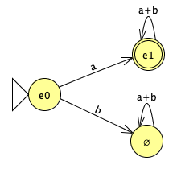

# Derivative Works in Computer Science ## Brian Howard, DePauw University
## Overview * Numeric and Symbolic Differentiation * Dual Numbers and Backpropagation * Lexing and Parsing * Types and Zippers
## Numeric Differentiation `$$ Df(a) = \lim_{\epsilon\rightarrow 0}\frac{f(a + \epsilon) - f(a)}{\epsilon} $$` If `$f$` is a function of `$n$` variables `$x_1,\ldots,x_n$`, then `$$ \begin{array}{l} D_i\, f(a_1,\ldots,a_n) =\\ \displaystyle\qquad\lim_{\epsilon\rightarrow 0}\frac{f(a_1,\ldots,a_i+\epsilon,\ldots,a_n) - f(a_1,\ldots,a_i,\ldots,a_n)}{\epsilon} \end{array} $$`
## Symbolic Differentiation Consider expressions over free variables `$x_1,\ldots,x_n$` `$$ \begin{array}{l|l} D_i a = 0,\quad\textit{if}\ x_i\not\in a & D_i x_i = 1\\ D_i(a + b) = D_i a + D_i b & D_i(a\cdot b) = D_i a\cdot b + a\cdot D_i b\\ D_i(a^n) = n\cdot a^{n-1}\cdot D_i a & D_i(f(a, b)) = D_a\, f\cdot D_i a\\ D_i(e^a) = e^a\cdot D_i a & \qquad {} + D_b\, f\cdot D_i b \end{array} $$` "Structural Induction"
## Machine Learning: Gradient Descent * Approximate `$f:A\rightarrow B$` by finding parameter `$w$` for `$g:W\times A\rightarrow B$` * Train on examples `$(a, f(a))$`; define loss function `$L(w) = ||\,f(a) - g(w, a)||$` * Use `$\nabla L$` to improve `$w_0$` to `$w_0-r\cdot\nabla L(w_0)$`. Repeat.
## Approaches to Gradient Computation * Manual differentiation * Numerical differentiation * Symbolic differentiation * Automatic differentiation
## Manual or Symbolic Differentiation Consider `$f(x) = m_4$`, where `$m_1=x$` and `$m_{n+1}=4m_n(1 - m_n)$` ("truncated logistic map" example from Baydin, *et al.*): `$f(x)=64x(1-x)(1-2x)^2(1-8x+8x^2)^2$`, so `$f'(x)=128x(1-x)(1-2x)^2(1-8x+8x^2)(-8+16x) + \ldots$` Needs a closed form, and leads to "Expression Swell"
## Numerical Differentiation ```haskell f :: Double -> Double f x = m 4 where m 1 = x m n = let mn1 = m (n - 1) in 4 * mn1 * (1 - mn1) f' :: Double -> Double f' x = let eps = 0.000001 in (f (x + eps) - f x) / eps > f' 0.25 7.999951999848598 ``` "Cardinal Sins of Numerical Analysis": * adding a small number to a big number * subtracting nearly equal numbers
## Automatic Differentiation with Dual Numbers `$x = a + b\varepsilon$`, where `$\varepsilon > 0$` but `$\varepsilon^2 = 0$` (Compare to `$x = a + bi$`, where `$i^2 = -1$`) Calculate value and derivative simultaneously
## Dual Number Examples `$$ \begin{array}{l} (a_1+b_1\varepsilon) + (a_2+b_2\varepsilon) = (a_1+a_2)+(b_1+b_2)\varepsilon\\ (a_1+b_1\varepsilon) \cdot (a_2+b_2\varepsilon) = a_1\cdot a_2+(a_1\cdot b_2+a_2\cdot b_1)\varepsilon\\ (a+b\varepsilon)^n = a^n + (n\cdot a^{n-1}\cdot b)\varepsilon\\ e^{a+b\varepsilon} = e^a + (e^a\cdot b)\varepsilon\\ f(a+b\varepsilon) = f(a) + (f'(a)\cdot b)\varepsilon \end{array} $$`
## Logistic Map Revisited ```haskell data Dual = Dual Double Double deriving (Read, Show, Eq) instance Num Dual where (+) (Dual a1 b1) (Dual a2 b2) = Dual (a1 + a2) (b1 + b2) (*) (Dual a1 b1) (Dual a2 b2) = Dual (a1 * a2) (a2 * b1 + a1 * b2) ... f :: Dual -> Dual f x = m 4 where m 1 = x m n = let mn1 = m (n - 1) in 4 * mn1 * (1 - mn1) > f (Dual 0.25 1) Dual 0.75 8.0 ```
## Forward vs Backward AD * Dual numbers give forward AD * If `$f:\Bbb{R}^n\rightarrow\Bbb{R}$`, then forward AD is `$O(n^2)$` * Backward AD uses X to make this `$O(n)$`, where X is one or more of: - traces - continuations - sharing - matrix transpose - category theory - ...
## Lexing and Parsing * Lexical Analysis: identify tokens from input - Usually described by regular expressions - Efficient code using a finite state machine * Syntactic Analysis: organize tokens into a parse tree - Usually described by context-free grammar - Efficient code using a state machine plus a stack
## Brzozowski Derivatives (1964) Direct construction of finite state machine from regular expression: * States are (equivalence classes of) regular expressions * Transitions `$e \stackrel{a}{\longrightarrow} D_a e$` * Derivative `$D_a e$` is "suffixes of strings of `$e$` that start with `$a$`" * State is accepting if empty string in `$e$`
## Symbolic Brzozowski Differentiation `$$\begin{array}{l|l} D_a \emptyset = \emptyset & D_a \epsilon = \emptyset\\ D_a a = \epsilon & D_a b = \emptyset\\ D_a (e_1 + e_2) = D_a e_1 + D_a e_2 & D_a (e^*) = (D_a e)e^*\\ D_a (e_1 e_2) = (D_a e_1)e_2 + \delta(e_1)(D_a e_2) & \\ \hline \delta(\emptyset) = \emptyset & \delta(\epsilon) = \epsilon\\ \delta(a) = \emptyset & \delta(e_1 e_2) = \delta(e_1)\delta(e_2)\\ \delta(e_1 + e_2) = \delta(e_1) + \delta(e_2) & \delta(e^*) = \epsilon \end{array}$$`
## Example: `$e_0 = a(a+b)^*$` `$\begin{array}{rcl} D_a e_0 & = & (D_a a)(a+b)^* + \delta(a)(D_a (a+b)^*)\\ & = & \epsilon(a+b)^* + \emptyset\\ & = & (a+b)^* \quad = e_1\\ D_b e_0 & = & \emptyset\\ D_a e_1 & = & (D_a (a+b))(a+b)^*\\ & = & e_1\\ D_b e_1 & = & e_1 \end{array}$`
## Example Continued `$e_0 = a(a+b)^*$` and `$e_1 = (a+b)^*$` 
## Context-Free Grammars Reg. Exprs. plus mutually-recursive definitions: `$$\begin{array}{rcl} E & = & E\ \texttt{addOp}\ T + T\\ T & = & T\ \texttt{mulOp}\ F + F\\ F & = & \textit{Id} + \textit{Num} + \texttt{'('}\ E\ \texttt{')'}\\ \textit{Id} & = & \texttt{letter}\ \textit{IdRest}\\ \textit{IdRest} & = & (\texttt{letter} + \texttt{digit})\ \textit{IdRest} + \epsilon\\ \textit{Num} & = & \textit{Num}\ \texttt{digit} + \texttt{digit} \end{array}$$` (Don't even need Kleene star...)
## Derivative Parsing (Might 2011) Definition of `$D_a$` is the same, plus "implicit differentiation": `$$\begin{array}{rcl} E & = & E\ \texttt{addOp}\ T + T\\ D_a E & = & (D_a E)\ \texttt{addOp}\ T + D_a T \end{array}$$` Expand as needed, "stacking up" remaining obligations in the state Only trick is avoiding non-termination: laziness and memoization
## Types and Zippers * Polynomial Types: 0, 1, `$1+T$`, `$T+T^3$`, ... - `$+$` is disjoint union/variant - `$\times$` is cartesian product/tuple * Regular Types: defined by mutually-recursive equations of polynomials
## Examples `$$\begin{array}{rcll} \textit{Bool} & = & 1 + 1 & \textit{false, true}\\ \textit{Nat} & = & 1 + Nat & \textit{zero, succ(n)}\\ \textit{List}[A] & = & 1 + A\times\textit{List}[A] & \textit{nil, cons(a, l)}\\ \textit{BTree}[A] & = & 1 + A\times\textit{BTree}[A]^2 & \textit{empty, node(a, l, r)}\\ \textit{Tree}[A] & = & A + \textit{Forest}[A] & \textit{leaf(a), fnode(f)}\\ \textit{Forest}[A] & = & \textit{List}[\textit{Tree}[A]] & \end{array}$$`
## Zipper Data structure keeping track of a position in another structure: "one-hole context", just needing a value to put in the hole Huet, 1997: informally described zippers for trees McBride, 2001: "The Derivative of a Regular Type is its Type of One-Hole Contexts"
## Type Derivatives Same as the usual laws, with implicit differentiation for the recursion `$$\begin{array}{rcl} \textit{List}[A] & = & 1 + A\times\textit{List}[A]\\ D_A \textit{List}[A] & = & \textit{List}[A] + A\times(D_A \textit{List}[A]) \end{array}$$` Solve `$T = B + A\times T$` to get `$T = B\times\textit{List}[A]$`, so a list zipper is the tail of the list (`$B=\textit{List}[A]$`) plus a list of A values for the prefix from the head to the hole: `$[a_0, a_1, ..., a_n, \Box, b_0, b_1, ...]$`
## Binary Trees `$$\begin{array}{rcl} \textit{BTree} & = & 1 + A\times\textit{BTree}^2\\ D_A \textit{BTree} & = & \textit{BTree}^2 + 2\times A\times\textit{BTree}\times(D_A \textit{BTree})\\ & = & \textit{BTree}^2 \times \textit{List}[2\times A\times\textit{BTree}] \end{array}$$` At the current node, have two subtrees and a hole of type A. The path from the root is a list of tuples with a left/right flag (2), an A, and a subtree for the path not taken.